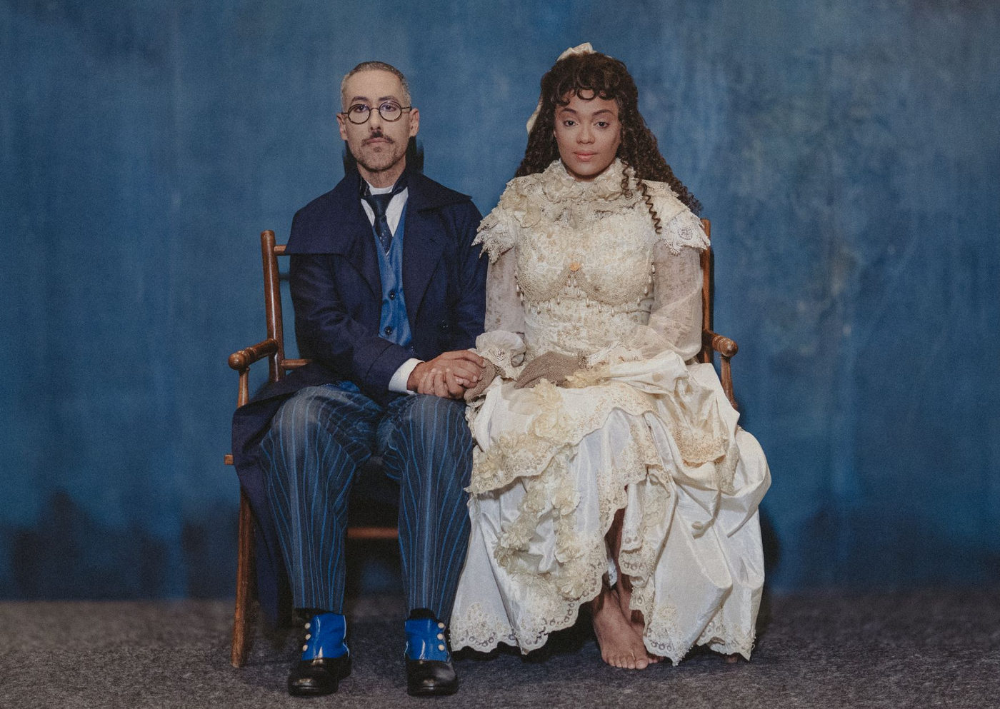

"Dom Casmurro" Ganha Adaptação Musical e Estreia no Teatro Estúdio, em São Paulo

Uma das maiores obras da literatura brasileira, Dom Casmurro, de Machado de Assis, será reimaginada em formato de musical.
A estreia acontece no dia 4 de novembro, no Teatro Estúdio, em São Paulo, para uma curta temporada com apresentações às segundas, terças e quartas.
Este projeto inovador é fruto de uma colaboração entre A Casa Que Fala e Tomate Produções, com direção do premiado Zé Henrique de Paula, que imprime uma nova visão à obra. As letras e músicas são compostas por Guilherme Gila, com texto adaptado por Davi Novaes e direção de movimento de Zuba Janaína.
Um Musical que Reinterpreta um Clássico
A ideia de adaptar Dom Casmurro para o teatro musical surgiu em 2021, durante a pandemia. Guilherme Gila e Davi Novaes perceberam uma lacuna no mercado de musicais brasileiros, que geralmente focam em biografias, e decidiram apostar na literatura nacional. “Muitos dos musicais internacionais que amamos são baseados em clássicos literários. Decidimos então trazer isso para o Brasil, e Dom Casmurro foi a escolha perfeita”, comenta Gila.
O processo criativo foi intenso e colaborativo, com encontros semanais para alinhar ideias e transformar textos em músicas. Quando o diretor Zé Henrique de Paula entrou no projeto, novas camadas de interpretação surgiram, trazendo uma leitura contemporânea e instigante para a história de Bentinho, Capitu e Escobar.
Desafios e Inovações
Davi Novaes destaca a complexidade de adaptar a obra sem perder sua essência. “Mantive o máximo possível da essência machadiana, mas também criei uma narrativa que dialoga com o público atual. Bentinho, o narrador, é uma figura ambígua e não confiável, o que nos permitiu explorar diferentes nuances da trama”, explica.
Elenco de Peso
O elenco, cuidadosamente escolhido, promete uma interpretação vibrante e emocionante:
Luci Salutes como Capitu, a protagonista enigmática de olhar "de cigana"
Rodrigo Mercadante como Bentinho, consumido por ciúmes e inseguranças
Cleomácio Inácio como Escobar, o amigo que gera tensões no triângulo amoroso
Larissa Carneiro como Prima Justina e Sancha
Fábio Enriquez como José Dias, o agregado curioso
Nábia Villela como Dona Glória, a mãe influente de Bentinho
Eduardo Leão como Tio Cosme, o conselheiro da família
Uma Trilha Sonora Diversificada
A trilha sonora mistura rock e MPB, refletindo os conflitos e emoções dos personagens. Para as cenas em que Bentinho desafia a autoridade de sua mãe, o rock and roll foi escolhido como símbolo de rebeldia. “Criamos um repertório musical que amplifica as emoções e os dilemas de Dom Casmurro”, explica Gila, que também estará ao piano, liderando a banda composta por Samir Alves (violino), Felipe Parisi (violoncelo) e Daniel Alfaro (percussão).
Equipe Técnica
A produção conta com um time técnico talentoso: Fran Barros no desenho de luz, Cauê Palumbo no desenho de som, Ùga agÚ no figurino, e Jo Sant Anna no visagismo. A cenografia, a cargo de Zé Henrique de Paula, é projetada para dialogar com a narrativa e criar uma experiência visual marcante.
Uma Celebração da Literatura Brasileira
Dom Casmurro - O Musical não é apenas uma adaptação; é uma celebração da obra de Machado de Assis e da riqueza da literatura nacional. A produção promete levar o público a uma jornada emocionante e envolvente, onde a música e a literatura se encontram para contar uma das histórias mais enigmáticas da nossa cultura.
Serviço
Local: Teatro Estúdio – Rua Conselheiro Nébias, 891, Campos Elíseos, São Paulo, SP
Temporada: De 4 a 27 de novembro
Sessões: Segundas às 20h | Terças às 20h | Quartas às 20h (exceto 6/11)
Duração: Aproximadamente 120 minutos (incluindo 15 minutos de intervalo)
Classificação: Livre
Ingressos: R$120 (inteira) | R$60 (meia-entrada)
Venda Online: Sympla (bilheteria física disponível 2h antes do início da sessão)
Prepare-se para uma experiência teatral inesquecível, onde a música e a literatura se unem para dar vida a um dos maiores clássicos brasileiros de uma forma vibrante e contemporânea.